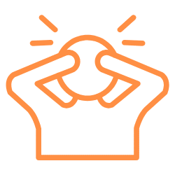
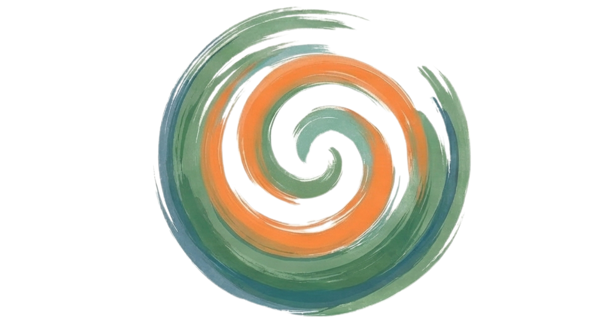
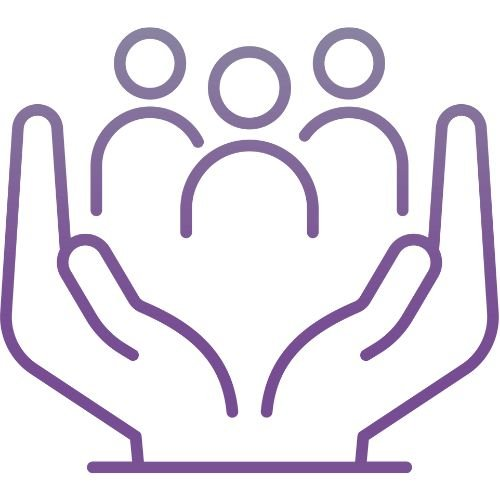
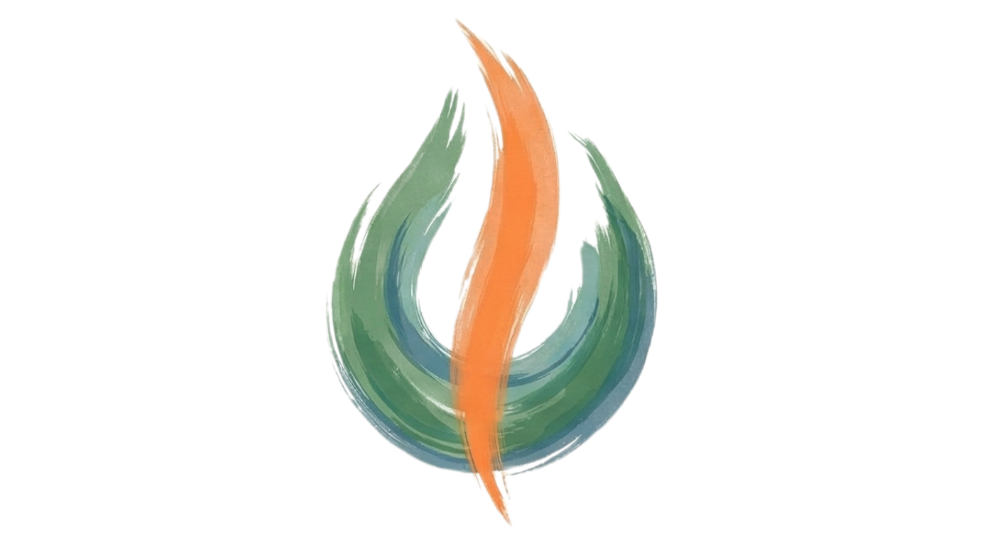
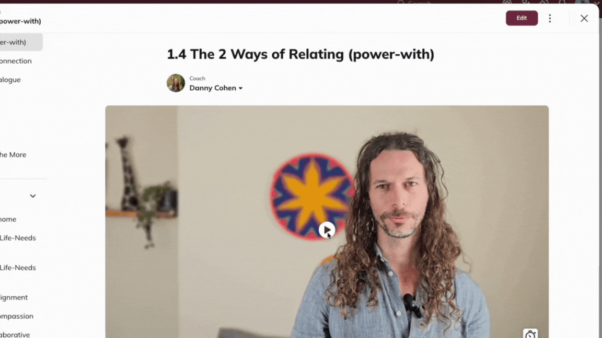
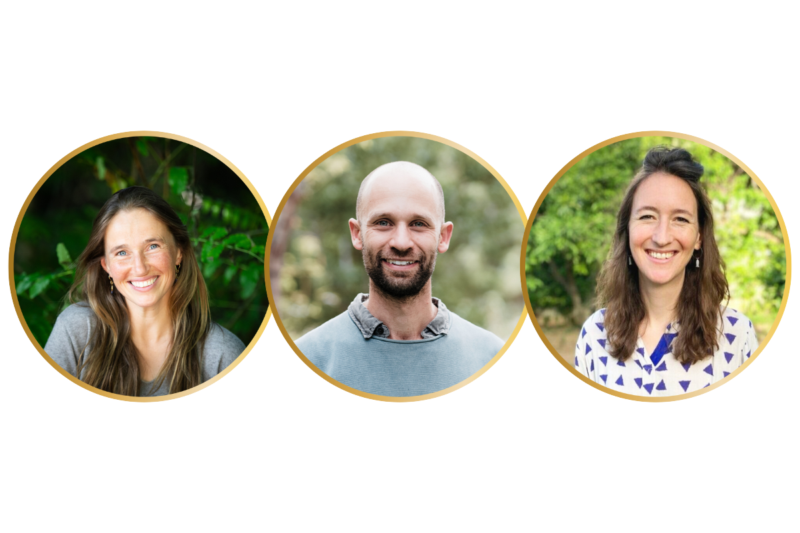
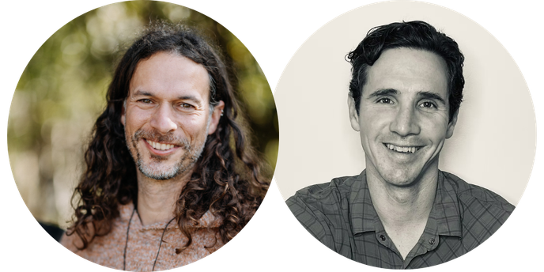
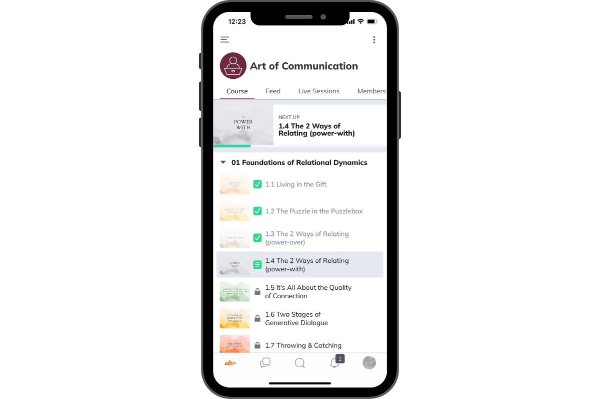
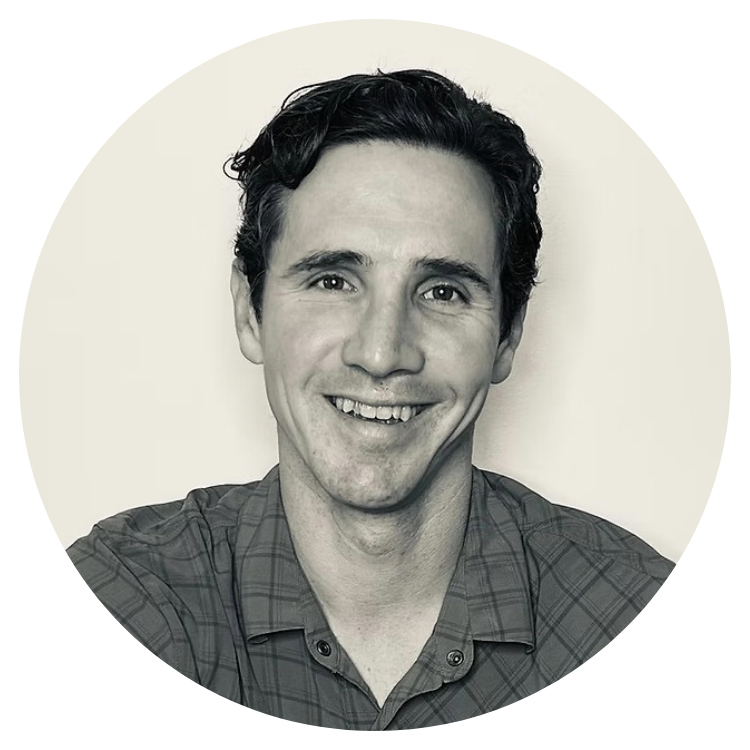

Clinical Excellence Meets Relational Intelligence
Free intro session Sep 27, with Danny and Dr. Tim Thayer · Cohort: Sundays, Nov 1 2026 – Jan 10 2027
The Clinical Reality: You Know How You Want to Show Up, But...
You entered medicine to care for people. But today's healthcare environment forces you into a high-velocity, transactional rhythm. Between demanding charts, back-to-back patient panels, and complex hospital politics, you are constantly managing systemic pressure.
When the stakes are high, it's easy to feel the toll:

The Art of Communication is a grounded, practice-rich path into relational intelligence as a core capacity for clinical excellence.

Sixteen years ago, I was stuck in rumination loops and relational drama. I couldn't access the grounded, compassionate version of myself when and where I most wanted to.
Drawing on intensive training in Nonviolent Communication, over a decade of deep training across multiple trauma-healing and therapeutic modalities, more than a year of silent meditation retreats, and years of real-world practice and facilitating trainings around the world, I've woven core principles of transformation into the powerful vehicle of embodied practice in community — not just being in community, but exploring and experiencing new ways of being alive together.
Over the past ten-plus years I've guided thousands of people — parents, professionals, activists, and seekers — through this same transformation. This course is a rigorous and supportive framework tailored to the unique nervous-system demands of clinical practice.
Now I want to guide you through the same journey.
The 10-Week Map

Regulating the Clinical Nervous System
Polyvagal foundations and emotional intelligence. Learn to track your own nervous system under stress and intentionally anchor yourself in the "green zone" during high-charge patient or peer encounters.

Whole Connection on the Ward
Bring your whole self into the doctor-patient and doctor-colleague axes. Learn the "listening magic" that lets patients feel deeply met in a fraction of the time, and how to drop the exhausting power-struggles of clinical hierarchies.

High-Charge Honesty, Grief & Full Dialogue
Practice the art of effective honesty — being radically real, setting fierce boundaries, and making potent requests to colleagues and administration without creating unnecessary defensiveness.
We'll Learn Together
Build the foundation you can learn to rest in. Master Polyvagal Theory to understand how your nervous system affects communication, learn to navigate toward the "green zone" where people are naturally cooperative, and discover the key skill that transforms dialogue from competition into collaboration.
Replace the "jackal consciousness" (right/wrong, power-over thinking) with needs-based relating. Like Neo seeing the Matrix code, you'll learn to see the life-needs that animate every interaction, opening pathways to coherence and mutually satisfying outcomes.
Discover why we have feelings and what to do with those "difficult" emotions that complicate relationships. Learn to access the embodied intelligence that feelings express and welcome them as gateways to connection and more congruent life choices.
Master the "superpower" of attuned empathy. Learn the foundational dance steps that turn relating into an art — many find this to be the master key that unlocks relationships. Move beyond techniques to create genuine connection that doesn't depend on agreement.
Stop having endless arguments about who's right. Learn to create shared reality and talk through problems without triggering defensiveness. Discover the potent alternative to praise and compliments that fuels intrinsic motivation and richer connection.
Transform how you make requests. Instead of people feeling burdened or giving in from obligation, learn the art of requests that invite true giving, create more choice and agency, and generate aliveness in relationships.
Access your magnetic power through presence. Learn to connect coherently with yourself, move beyond people-pleasing and "shoulds," and access more inner freedom, choice, and self-compassion.
Speak truth with care. Learn to be skillfully real without "rocking the boat" or reinforcing that honesty comes at a cost. Leverage the power of human resonance to be both authentic AND relational.
Learn to meet grief not as a problem to be solved, but as a sacred process to be honored. In a medical culture that often demands we "fix" or move past pain, discover how to slow down and offer a high-quality, non-judgmental presence. Master the somatic skills to stay anchored and regulated while navigating deep sorrow.
Put all the dance steps together. Navigate the back-and-forth of real conversations with skill, even in charged contexts. Master the art of collaborative dialogue in your most important relationships.
A Practice-Rich Sanctuary for Doctors
Live Weekly Sessions (2 hours)
- Live Danny-led practice sessions with our team
- Structured practice in breakout rooms with our coaches on hand for support
- Fertile and inspiring space to tend the seeds of transformation
Cohort-Based Community
- Safe practice space — explore new ways of relating with a dedicated peer group of like-minded physicians
- Consistent community — go through all 10 weeks with the same people

Weekly Learning Modules
- Units released weekly, watch on your own schedule
- Structured exercises to integrate skills into daily life, with AI to enhance your practice

Experienced Coaches Supporting You
- Coaches work alongside Danny through demos, practice, and Q&A in every session
- Ongoing guidance throughout the week on our course platform

2× 1-on-1 Coaching Sessions
- One session with Danny, one with Dr. Tim Thayer, who also assists the course

Mobile App Access
- Keep the content front of mind in everyday interactions
- High-yield audio/video modules on desktop and mobile, fit training into your actual clinical schedule

Speak with Tim Thayer, M.D. before you enroll
Effective communication is critical in medicine, but every practitioner's needs are unique. Take 15 minutes to speak directly with Tim Thayer, M.D., who'll be assisting this course. We'll discuss your current challenges and explore how this course can help.
Book 15 Minutes FreeThis isn't just about being "better at talking." It's about embodying the values of an interdependent future in the micro-moments where culture actually changes. When you're anchored in presence and confident in communication, you naturally shift the environment from defensive friction to collaborative trust.
Voices from Our Community
This Course Is Right for You If:
Here's what past participants experience:
"There's this precise, caring way of connecting where parts of myself get invited into connection rather than left out. I can be whole in connection and find my way to presence, where even tender parts are welcome."
"There is one modality I recommend to everyone without reservation, and that is NVC. Danny brings not only his deep knowledge but also his compassion and presence."
"Learning NVC with Danny was transformative for me as a physician and a person. He and his team created a safe, warm space to learn and grow. I will carry these powerful lessons into every relationship and patient encounter throughout my career."